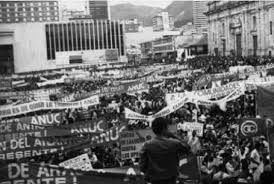

Cronología Global
Los grandes hitos del movimiento estudiantil mundial, desde las primeras reformas universitarias hasta las luchas por la educación pública del siglo XXI.
Reforma Universitaria de Córdoba

El primer gran movimiento estudiantil de América Latina estalló en la Universidad Nacional de Córdoba. Los estudiantes de clase media exigieron autonomía universitaria, cogobierno estudiantil, libertad de cátedra y acceso irrestricto a la educación superior. La reforma se exportó a toda Latinoamérica y sus principios siguen vigentes hoy.
El primer mártir estudiantil: Gonzalo Bravo Pérez
Durante una protesta en Bogotá contra el gobierno de Miguel Abadía Méndez, la policía asesinó al estudiante Gonzalo Bravo Pérez, convirtiendo a la juventud universitaria colombiana en actor político de primera línea. Su muerte aceleró la caída del conservatismo y es considerada el nacimiento del movimiento estudiantil moderno en Colombia.
El 8 y 9 de Junio: Días Fatales

Durante el gobierno dictatorial del General Gustavo Rojas Pinilla, el Ejército colombiano abrió fuego contra estudiantes universitarios que protestaban pacíficamente. Trece estudiantes perdieron la vida. El 8 de junio es conmemorado hoy como el Día del Estudiante Colombiano, en homenaje a quienes cayeron por defender el derecho a la educación y la libertad.
Boicot de Autobuses de Montgomery — Inicio del Movimiento por los Derechos Civiles
Aunque protagonizado por Rosa Parks, el boicot de los autobuses de Montgomery impulsado por Martin Luther King Jr. marcó el inicio de una era de activismo estudiantil masivo en Estados Unidos. Estudiantes afroamericanos organizaron sit-ins en restaurantes segregados, marchas de libertad y campañas de registro electoral, desafiando las leyes de Jim Crow con valentía y disciplina no violenta.
Los Sit-ins de Greensboro y el SNCC

El 1 de febrero de 1960, cuatro estudiantes afroamericanos del Colegio Agrícola y Técnico de Carolina del Norte se sentaron en un mostrador para blancos en una tienda Woolworth y se negaron a moverse. Este acto de resistencia pacífica desencadenó sit-ins en todo el Sur y condujo a la fundación del SNCC, que movilizaría a toda una generación de jóvenes activistas por los derechos civiles.
La Revolución Cultural Europea

En Francia, millones de estudiantes y trabajadores se unieron en el más grande movimiento social de la historia moderna. La toma de la Sorbona, las barricadas del Barrio Latino y la huelga general paralizaron al país por semanas. Simultáneamente en Alemania, Italia, México y Polonia, la juventud universitaria cuestionó el orden establecido, el capitalismo y la burocracia tanto occidental como soviética.
Masacre de Kent State: Cuatro muertos en Ohio
 1970
1970
Toma de la Rectoría y Movimiento Nacional Estudiantil
El 16 de abril de 1971, estudiantes de la UPTC tomaron la rectoría de la universidad. El movimiento nacional estudiantil, articulado en torno al Programa Mínimo, exigía cogobierno, democratización universitaria y autonomía académica. El presidente Misael Pastrana Borrero respondió con el Decreto 1259 que daba plenos poderes a los rectores para expulsar a estudiantes y docentes. Doce estudiantes de la UPTC fueron suspendidos y diecisiete expulsados.
El Catedralazo: Toma de la Catedral Primada de Tunja

En 1979, la desaparición del estudiante de Ingeniería Hernando Benítez, líder estudiantil de la UPTC, encendió la indignación universitaria. Sin organizaciones estudiantiles formales, la comunidad universitaria tomó las calles de Tunja y la Catedral Primada de la ciudad, con el apoyo decisivo de Monseñor Augusto Trujillo Arango. El "Catedralazo" fue un hito histórico que marcó el inicio de las organizaciones estudiantiles en la UPTC y constituyó una ruptura en las formas de acción del movimiento universitario colombiano.
La Masacre de la Plaza de Tiananmen

Cientos de miles de estudiantes ocuparon la Plaza de Tiananmen durante semanas exigiendo democratización, libertad de prensa y fin de la corrupción. El gobierno chino declaró la ley marcial y en la madrugada del 3 al 4 de junio, los tanques del Ejército Popular de Liberación aplastaron el movimiento. El "Hombre del Tanque" quedó como uno de los iconos más poderosos de la resistencia pacífica del siglo XX.
La "Primavera Estudiantil" Colombiana: Frenando la Privatización

El movimiento estudiantil colombiano de 2011, caracterizado por marchas creativas y festivas ("Besatones", "Abrazatones", marchas con disfraces), logró frenar la reforma a la Ley 30 de Educación Superior que hubiera permitido la privatización de las universidades públicas. El presidente Santos retiró el proyecto ante la presión estudiantil, en uno de los mayores triunfos del movimiento estudiantil colombiano en democracia.
El Paro por la Financiación de la Educación Pública
El Sistema Universitario Estatal (SUE) evidenció un déficit de 3,2 billones de pesos en funcionamiento y 15 billones en infraestructura. Estudiantes de todo el país se movilizaron masivamente. El resultado fue histórico: el gobierno se comprometió a incrementar el presupuesto universitario en 4,5 billones de pesos en cuatro años, el mayor avance en financiación de la educación superior pública en décadas.